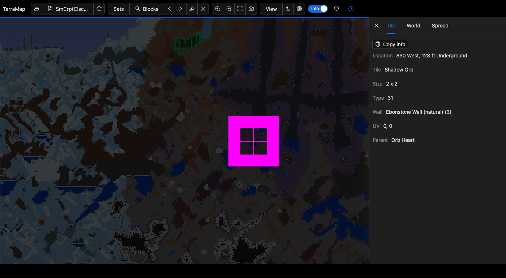

TerraMap
TerraMapHow to find Shadow Orbs and Crimson Hearts in Terraria
Shadow Orbs in the Corruption and Crimson Hearts in the Crimson give you strong early weapons and accessories, and breaking them is how you summon your world's first evil boss. Here's where they are and how to find every one.
Where they are
Your world has either the Corruption or the Crimson, so it has either Shadow Orbs or Crimson Hearts.
- Shadow Orbs sit inside the Corruption's deep, narrow chasms. In the worlds we checked they were 45 to 85 blocks below the surface.
- Crimson Hearts are inside the Crimson's caves, a bit deeper. In the worlds we checked they were 100 to 200 blocks below the surface.
- A world has one or more Corruption or Crimson areas, each with several orbs or hearts. The small worlds we checked had 10 to 16 in all.
Find them with TerraMap
- Open TerraMap and open your world with Open World File, or drag your
.wldfile onto the page. Not sure where it is? See where Terraria world files are saved. - Choose Sets → Shadow Orbs & Crimson Hearts.
- Press H (Highlight All) to light up every one, then N (Find Next) and P (Find Previous) to jump between them.
- Press I to open the Info pane. It names what TerraMap found and shows where it is, in the same format as the in-game Compass and Depth Meter.

Breaking them
- Use a hammer, not a pickaxe. Any hammer works, even a wooden one. Explosives work too.
- Every third one you break summons a boss: the Eater of Worlds in the Corruption, or the Brain of Cthulhu in the Crimson. Be ready before you break the third.
- Each one drops an item. Shadow Orbs drop the Musket (with Musket Balls), Vilethorn, Ball O' Hurt, Band of Starpower, or a Shadow Orb light pet. Crimson Hearts drop The Undertaker (with Musket Balls), Crimson Rod, The Rotted Fork, Panic Necklace, or a Crimson Heart light pet.
Tip: The Corruption's chasms are deep and narrow. Bring a way to slow your fall, or dig your own tunnel down to the orb from the side.